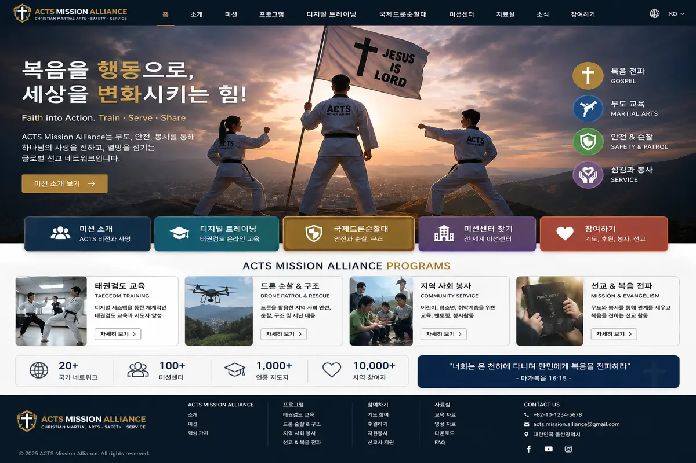

ACTS MISSION ALLIANCE · NEWSLETTER 01
ACTS를 위해
함께 기도해 주세요.
작은 기도 하나가 세계의 선교사에게 닿습니다.

세상 어딘가에는 오늘도 누군가의 기도가 필요합니다.
이야기 시작하기 ↓세상 어딘가에는
오늘도 누군가의 기도가 필요합니다.
낯선 곳에서, 다른 언어와 문화 속에서 복음을 전하며 살아가는 선교사들이 있습니다.
그들의 하루에는 사역뿐 아니라 건강, 안전, 교육, 관계, 다음 세대를 위한 준비까지 수많은 필요가 함께합니다.
당신의 기도가 그곳까지 닿을 수 있습니다.
선교사에게 필요한 것은
후원금만이 아닙니다.
기도와 재능, 교육과 기술, 그리고 사람과 사람의 연결이 선교 현장에 큰 힘이 됩니다.
모든 사람이 해외로 갈 수는 없습니다.
하지만 누구나 자신이 가진 작은 것을 나눌 수 있습니다.
ACTS는 사람과 사람을 연결합니다.
필요한 사람이 도움을 요청하고, 가진 사람이 자신의 것을 나누고, ACTS가 그 둘을 연결합니다.
🌍세계의 선교 현장
↓
↓
기도자교육자무도인전문가재능기부자후원자
사람이 연결되면, 더 멀리 갈 수 있습니다.
오늘은 한 가지만 부탁드립니다.
🙏 함께 기도해 주세요.
세계 곳곳에서 복음을 전하는 선교사님들의 건강과 안전을 위해.
ACTS가 정말 도움이 필요한 선교 현장과 사람들을 바르게 연결할 수 있도록.
자신의 재능과 경험을 나누려는 사람들이 ACTS를 통해 서로 만날 수 있도록.
감사합니다.
오늘 또 하나의 기도가 세계를 향해 시작되었습니다.
기도하는 당신도 ACTS의 동행자입니다.